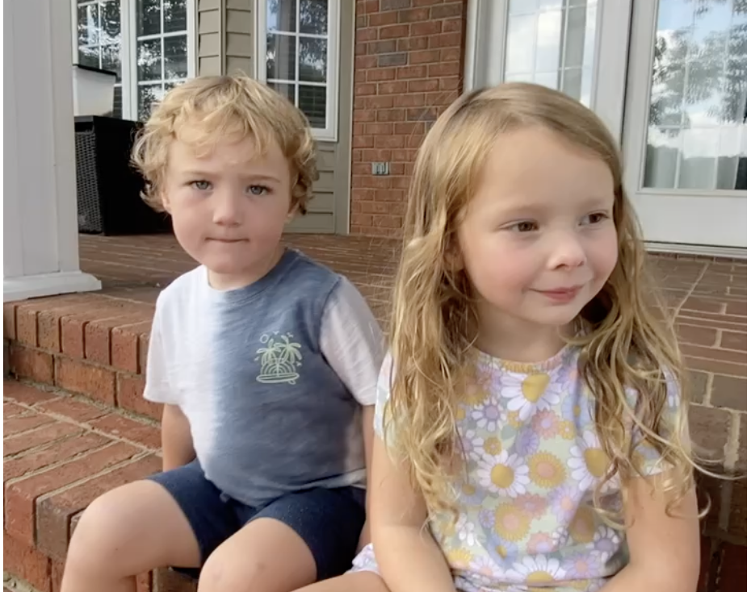

Former Forest City firefighter arrested for arson
Former Forest City firefighter Harmon Hunt was arrested Wednesday and charged in connection with an alleged arson incident that authorities say caused a large field fire visible from nearby roads.
According to multiple onlookers, Hunt appeared completely unfazed during the incident. Witnesses claim the suspect allegedly returned home to continue playing PlayStation 5 shortly after the blaze ignited.
Investigators with the Forest City Police Department say arson committed by an individual of this age can carry a hefty prison sentence under North Carolina law, particularly when the fire endangers nearby structures, livestock, or first responders.
Grandparents Susan and Keith Hunt told the Daily Courier that Harmon had not been allowed on the family property since 2023, following what they described as a "similar incident" the family had hoped was behind them.
"We love him," Susan Hunt said in a brief statement Wednesday evening. "But we made it clear after the last time that he couldn't be back here unsupervised. We are heartbroken."
Sources close to the investigation say arson cases in small towns are often driven by motives that surprise even seasoned investigators. "In communities this size, it's almost never random," one veteran investigator told the Courier. "It's usually rooted in something personal — a grudge, a falling out, and in more cases than people would guess, it's done for love. We've seen it again and again."
Hunt is being held pending a bond hearing scheduled for later this week. Investigators are asking anyone with information, photographs, or video of Wednesday's fire to contact the Forest City Police Department tip line.
Additional charges: alleged animal cruelty
In a separate line of inquiry, Hunt is also being investigated for alleged animal cruelty after deputies say multiple rabbits were discovered confined on the property in a wire live-trap with no apparent intention of release. According to the responding officer's report, the animals showed signs of prolonged confinement and dehydration. Forest City Animal Control was called to the scene and removed the animals for evaluation.

Speculation surrounds a recent breakup
Sources close to the family say investigators are also examining whether a recent personal fallout may have contributed to Hunt's alleged behavior. Hunt had reportedly been in a relationship with Salem Vanhoy, pictured below, prior to what neighbors describe as a "difficult and very public" breakup in the weeks leading up to the fire.
Several community members the Courier spoke with speculated that the emotional fallout — what one neighbor called a "complete cognitive dissonance" following the split — may have triggered the alleged arson. Veteran investigators echoed the sentiment: small-town arson, they say, is more often than not "done for love, or the loss of it."
A handful of sources have gone further, quietly suggesting Vanhoy herself may have had some knowledge of, or involvement in, the events of Wednesday afternoon. Authorities have not named Vanhoy as a suspect and stress that no charges have been filed against her at this time.

This is a developing story. Check back with thedigitalcourier.com for updates.